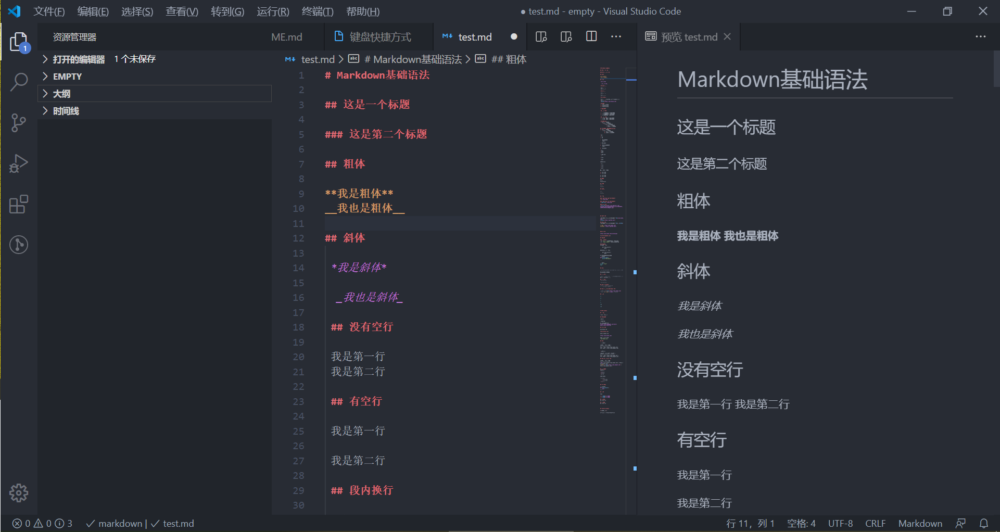
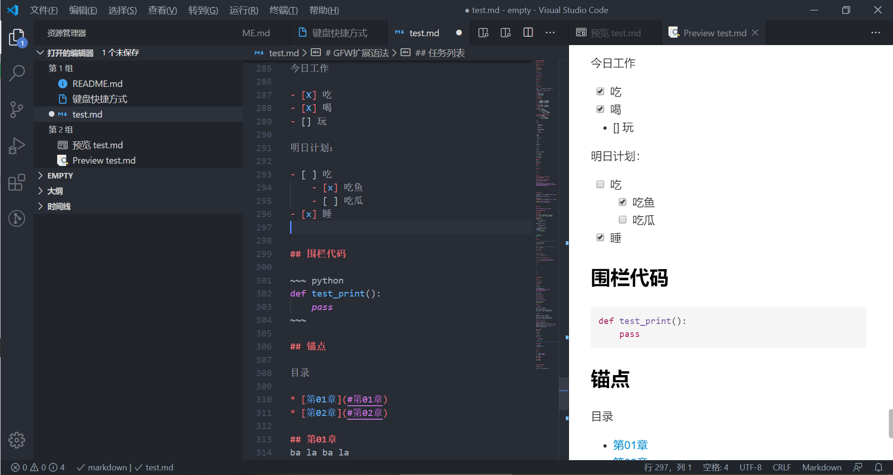
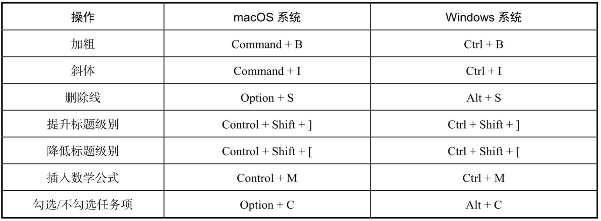
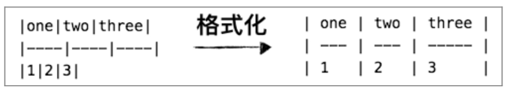

VS Code配置为强大的Markdown编辑器
文章目录
介绍
VS Code是一个开源跨平台的强大文本编辑器，利用丰富的扩展插件可以打造出一个功能强大的Markdown编辑器。
VS Code 下载地址: https://code.visualstudio.com
必备插件安装
-
中文插件
- 插件名称 Chinese (Simplified) Language Pack for Visual Studio Code.
- 配置项 Configure Display Language 中选择cn
- 重启VS Code 生效
-
主题插件
- 插件名称 One Dark Pro
- 配置项 管理 -> 颜色主题 中切换主题即可
-
文件图标主题插件
- 插件名称 Material Icon Theme 或者 vscode-icons 二选一
- 配置项 管理 -> 文件图标主题 中切换主题即可
-
快捷键插件
-
Vim
-
IntelliJ IDEA Key Bindings for Visual Studio Code
-
开始编辑
-
新建后缀名为 .md 的文档
-
打开侧边预览窗口
- 侧边预览按键位置在编辑界面右上角

高效编辑插件
-
Markdown Preview Enhanced
VS Code自带的预览功能有些地方渲染的不是很好，如任务列表和表格的渲染。安装增强预览插件 (MPE) 可以解决这个问题。
效果如下：

-
Markdown All in One
MAO 提供了常用的Markdown快捷键和自动补全功能。除此之外还有格式化表格和图片路径自动联想。


-
Markdown 规范检查插件
Markdownlint是一款用来检查Markdown写作规范的插件，安装以后会对编辑的文档检查，在有问题的地方会给出改进提示。如下图所示

-
Git版本管理增强插件
- GitLens
- Git History
- gitIgnore
文章作者 lilei520007@126.com
上次更新 2020-05-31